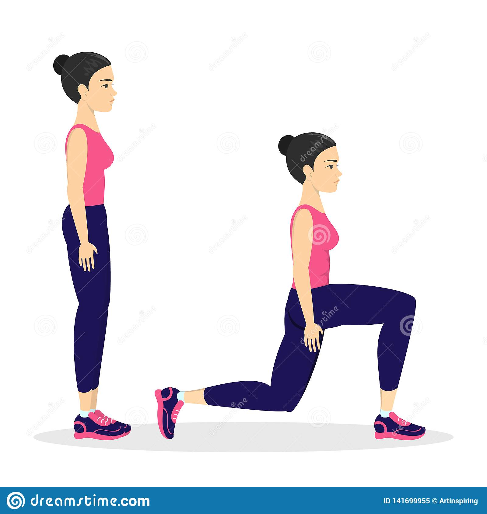

Leg Lunges

เริ่มต้นด้วยการยืนตัวตรงแยกเท้าความกว้างประมาณช่วงสะโพก จากนั้นก้าวเท้าข้างหนึ่งไปด้านหน้ากว้างประมาณ 2 ก้าวเล็ก
พร้อมย่อตัวลงให้เข่าด้านหน้าทำมุม 90 องศา ลำตัวตั้งตรง ทิ้งน้ำหนักลงตรงกลาง กลับสู่ท่ายืนปกติแล้วทำซ้ำโดยสลับก้าวขาอีกข้างไปข้างหน้า
ประโยชน์ ท่านี้ช่วยบริหารต้นขาด้านหน้า ก้น และกล้ามเนื้อแฮมสตริง ทำให้ขาและกันกระชับ กล้ามเนื้อขาเข็งแรง